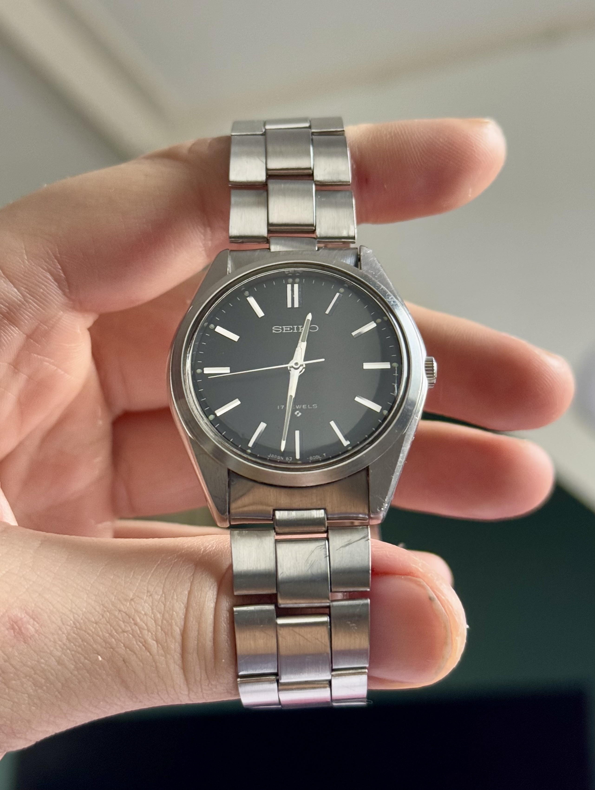
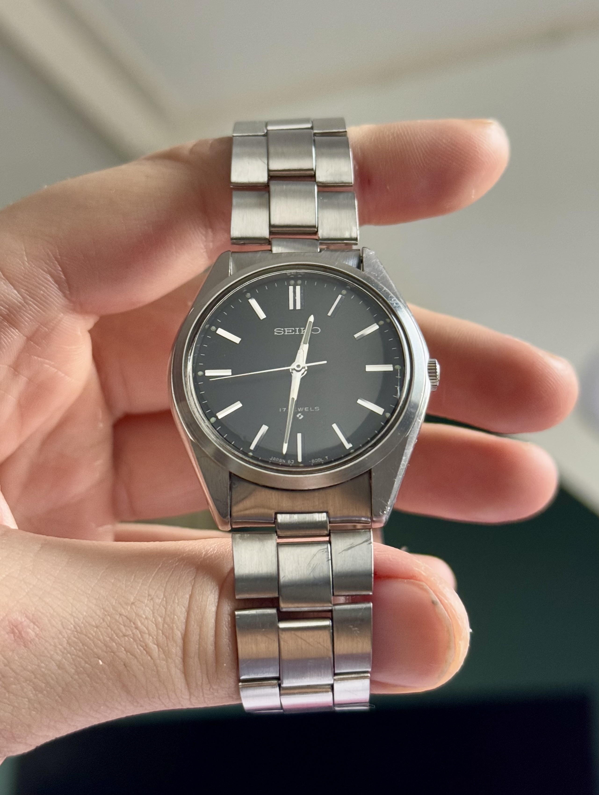
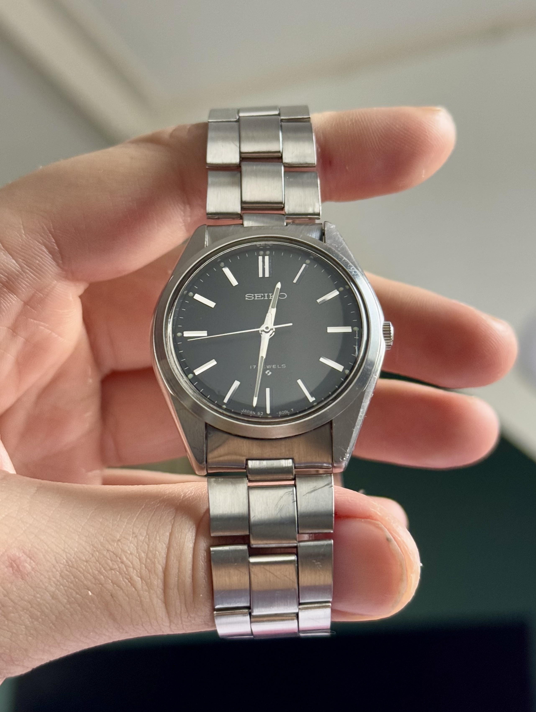

Restoring Vintage Seikos
My tips on how to find a vintage Seiko up to cleaning the watch to get it fresh for your wrist again!
 

Your guide to vintage watches
My tips on how to find a vintage Seiko up to cleaning the watch to get it fresh for your wrist again!

Exploring the restoration process of another vintage timepiece!